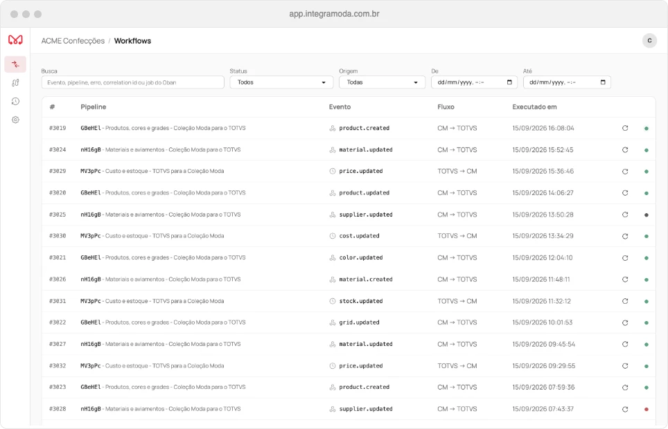
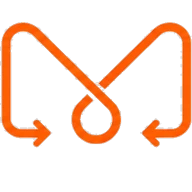
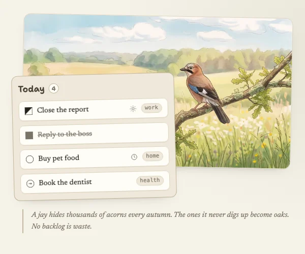
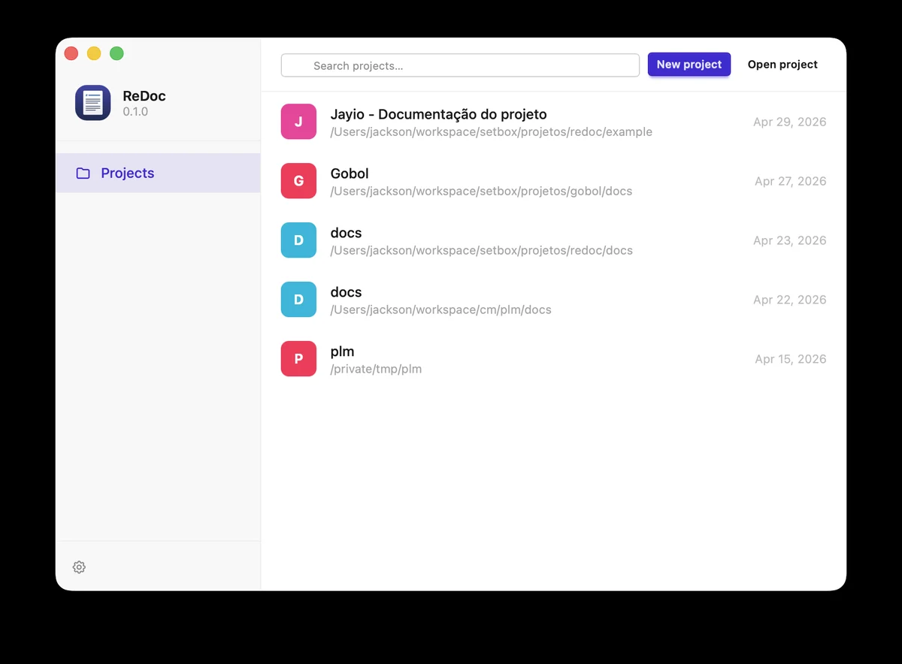
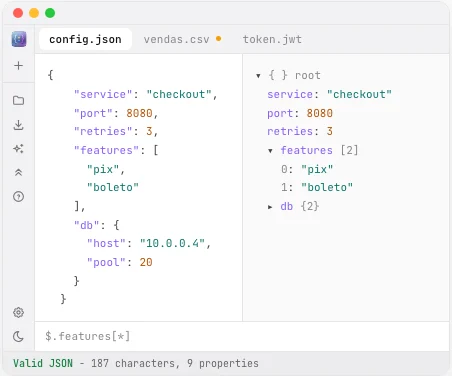
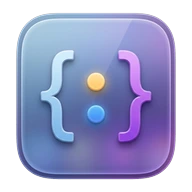

Software que a gente constrói e opera
Produtos próprios da Setbox, do ERP à ferramenta de desenvolvedor. São a mesma engenharia que levamos para os projetos dos nossos clientes.
Para empresas


Integração entre PLM e ERP
Integra Moda
O produto cadastrado no PLM chega ao ERP sem redigitação, e insumos, fornecedores e cores voltam do ERP para o PLM. Tudo campo a campo, sem planilha nem PDF no meio do caminho.
Para quem é: confecções e marcas de moda que usam a Coleção Moda e um ERP como TOTVS, Sisplan ou Excia.
- Duas vias: do PLM ao ERP e do ERP ao PLM
- Conectores prontos para TOTVS, Sisplan e Excia
- Em operação em seis clientes TOTVS
- Painel com o histórico de 90 dias de cada integração
ERP para concreteiras
Planta ERP
Núcleo comum com módulos ligados por empresa. O primeiro vertical atende usinas de concreto da proposta à entrega, com o custo real de cada metro cúbico.
Para quem é: concreteiras de porte médio que hoje controlam carga, venda e entrega em planilhas e grupos de mensagem.
- Orçamento em campo no tablet, com margem em tempo real
- Cálculo de carga com correção da umidade da areia
- Programação de entrega dentro da janela do concreto
- Módulos de produção, frota, balança, logística e fiscal
Para organizar o seu dia

Tarefas na web
Jayio
À meia-noite a lista de hoje se esvazia: o que ficou pela metade volta à reserva, o que foi feito vai para o histórico e o que estava marcado para amanhã sobe.
Para quem é: quem quer foco no dia, no trabalho e na vida pessoal, sem carregar listas que nunca acabam.
- Virada automática à meia-noite, no fuso de cada pessoa
- Tarefas pessoais e profissionais separadas por ícone
- O estado de cada tarefa visível no próprio ícone
- Em português e inglês
Ferramentas de quem escreve software

Documentação no desktop
ReDoc
Abre pastas Markdown ou pacotes .redoc sem servidor, banco de dados ou configuração. A documentação fica em texto puro, versionada no Git.
Para quem é: equipes que mantêm documentação técnica em Markdown e querem ler e editar sem depender de nuvem.
- Diagramas Mermaid, avisos, notas de rodapé e variáveis
- Busca global com filtros por tag e diretório
- Validação de links quebrados e páginas órfãs
- macOS, Windows e Linux


Dados estruturados no desktop
Loupe
Editor e árvore navegável sincronizados, busca JSONPath e validação a cada tecla. Tudo na sua máquina: o arquivo não sai do disco.
Para quem é: desenvolvedores que vivem abrindo respostas de API, logs e arquivos de configuração.
- JSON, YAML, TOML, XML, CSV, logfmt e mais
- Árvore virtualizada para arquivos enormes
- Busca JSONPath e erro apontado na linha exata
- macOS, gratuito e de código aberto
Tem uma ideia de produto?
A mesma equipe que construiu esses produtos desenvolve o seu, do desenho à operação.